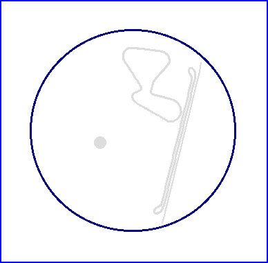

| Length | 2.969 Miles // 4.778 km |
| Direction | |
Contact Information |
|
| Address |
Am Opel Prüffeld 2 63110 Rodgau-Dudenhofen |
| Telephone | +49 (0)6106 281182 |
| Website | http://www1.opel.de/dudenhofen |
Dudenhofen
Proving Ground

| Length | 2.969 Miles // 4.778 km |
| Direction | |
Contact Information |
|
| Address |
Am Opel Prüffeld 2 63110 Rodgau-Dudenhofen |
| Telephone | +49 (0)6106 281182 |
| Website | http://www1.opel.de/dudenhofen |
Lasted Updated: 04 October 2003 23:47:28 GMT Daylight Time